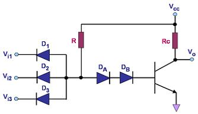

Diode-Transistor Logic (DTL)
Diode-Transistor Logic,
or
DTL, refers to
the technology for designing and fabricating digital circuits wherein
logic gates employ both diodes and transistors. DTL offers better noise
margins and greater fan-outs than
RTL, but suffers from low speed,
especially in comparison to TTL.
RTL
allows the construction of NOR gates easily, but NAND gates are
relatively more difficult to get from RTL. DTL, however, allows the
construction of simple NAND gates from a single transistor, with the
help of several
diodes and resistors.
Figure 1
shows an example of an
3-input DTL NAND gate. It consists of
a single
transistor Q configured as an inverter,
which is
driven by a current that depends on the inputs to the
three input diodes D1-D3.
|
 |
|
Figure 1.
A simple 3-input DTL NAND Gate |
In the NAND gate in Figure
1, the current through diodes DA and DB will only be large enough to
drive the transistor into saturation and bring the output voltage Vo to
logic '0' if all the input diodes D1-D3 are 'off', which is true when
the inputs to
all
of them are logic
'1'. This is because when D1-D3 are not conducting, all the
current from Vcc through R will go through DA and DB and into the base
of the transistor, turning it on and pulling Vo to near ground.
However, if
any
of the diodes D1-D3 gets an
input voltage of logic '0', it gets forward-biased and starts
conducting. This conducting diode 'shunts' almost all the current away
from the reverse-biased DA and DB, limiting the transistor base current.
This forces the transistor to turn off, bringing up the output voltage
Vo to logic '1'.
One
advantage of DTL over RTL is its better noise
margin.
The noise margin of a logic gate for logic level '0',
Δ0, is defined as the
difference between the maximum input voltage that it will
recognize as a '0' (Vil) and the maximum voltage that may be applied to it as a '0'
(Vol of the driving gate connected to it). For logic level '1', the noise
margin
Δ1 is the
difference between the minimum input voltage that may be applied to it as a '1'
(Voh of the driving gate connected to it) and the minimum input voltage that
it will
recognize as a '1' (Vih).
Mathematically,
Δ0 = Vil-Vol
and
Δ1 = Voh-Vih.
Any noise
that causes a noise margin to be overcome will result in a '0' being
erroneously read as a '1' or vice versa. In other words, noise
margin is a measure of the immunity of a gate from reading an input
logic level incorrectly.
In a DTL
circuit, the collector output of the driving transistor is separated
from the base resistor of the driven transistor by several diodes.
Circuit analysis would easily show that in such an arrangement, the
differences between Vil and Vol, and between Voh and Vih, are much
larger than those exhibited by RTL gates, wherein the collector of the
driving transistor is directly connected to the base resistor of the
driven transistor. This is why DTL gates are known to have
better noise
margins
than
RTL
gates.
One
problem that DTL doesn't solve is its
low speed,
especially when the transistor is being turned off. Turning off a
saturated transistor in a DTL gate requires it to
first pass through the active region before going into cut-off.
Cut-off, however, will not be reached until the stored charge in its
base has been removed. The dissipation of the base charge takes time if
there is no available path from the base to ground. This is why
some DTL circuits have a base resistor that's tied to ground, but even
this requires some trade-offs. Another problem with turning off
the DTL output transistor is the fact that the effective capacitance of
the output needs to charge up through Rc before the output voltage rises
to the final logic '1' level, which also consumes a relatively large
amount of time.
TTL, however, solves the speed problem
of DTL elegantly.
See Also:
TTL Parameters; Logic
Gates; RTL; DTL; CMOS
HOME
Copyright
©
2005
www.EESemi.com.
All Rights Reserved.